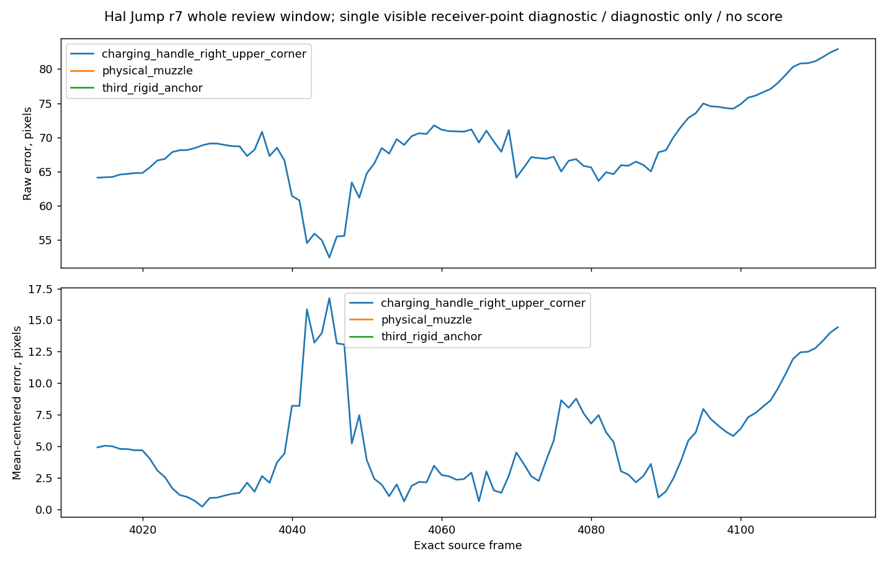

Aella · Motion measurements · 4 October 2026
Jump r7: Colab results
The actual Colab CPU run completed on the mapped 100-frame Jump window. Its numerical results match the local run exactly. The comparison covers one visible receiver point on Halcyon’s existing Eevee preview.
Diagnostic only · No score
Most measured motion differences are within the annotation uncertainty. These results do not establish an 80% match, a pass, or complete weapon-motion approval.
Measured preview
100 output frames at 60 fps, 1.667 seconds. Source frames 4014–4113, mapped one-to-one at native speed with no playback retiming.
The measured landmark is the upper outer right charging-handle corner. It is a proposed corresponding point: the reference rifle and candidate HK416 have different geometry, and this correspondence has not been jointly frozen for scoring.
All 100 point samples were reviewed. Full-viewport inspection covered 57 frame pairs. Complete normal-speed and slow-playback review remains outstanding.
The gallery’s existing scores and reviewer assessments are separate from this unscored r7 diagnostic.
Immutable r7 video revision · Video provenance manifest · Eevee capture evidence · Pinned authored source
What the measurements show
- Baseline-relative displacement: RMS 6.79 px, 95th percentile 13.64 px, maximum 16.56 px at source frame 4045.
- Landing and recovery baseline RMS: 4.85 px. The largest early-air residual is close to the usual 16 px annotation bound, so it does not justify changing the protected takeoff or air motion.
- The raw screen-position RMS is 68.94 px. It is retained to show the framing offset. Mean-centered RMS is 6.66 px; centering is a separate diagnostic, not a replacement for the raw result.
- The candidate holds its exact ready pose after source frame 4095 while the reference retains small motion. The late-tail residual remains visible.
The fixed baseline is source frame 4033. Annotation bounds are conservative error bounds, not statistical confidence intervals.
| Phase | Source frames | Samples | Baseline RMS |
|---|---|---|---|
| Lead Hold | 4014–4032 | 19 | 4.04 px |
| Takeoff | 4033–4043 | 11 | 7.12 px |
| Air | 4044–4066 | 23 | 6.83 px |
| Landing Recovery | 4067–4095 | 29 | 4.85 px |
| Tail Hold | 4096–4113 | 18 | 10.52 px |
Preserved Colab plot

Evidence still missing
- Physical source muzzle, a third agreed noncollinear rigid anchor, and reference normalization length L. Axis, normalized spatial thresholds and full-weapon motion remain unsupported.
- A frozen event-scoring contract and independent complete-clip review. No percentage or artistic approval was computed.
- Full grip/contact, hidden motion, 3D orientation, export correctness and game-runtime review. A single 2D point cannot establish these.
Source and candidate bytes were checked locally. The Colab run consumed the measurement JSON and did not independently verify those original media bytes. No new disappearance or reset was apparent in the 57 inspected viewport pairs; unseen frames are not certified.
Downloadable results and provenance
Public summary JSONOriginal numerical report JSONOriginal residual plot

Execution: Colab CPU, actual animation data, no synthetic test data. Numerical results match the local run exactly.
Verification hashes
Preserved Colab ZIP SHA-25607692c3be1bb51b78ac6693bb7fff31dfd7a5b4f57609c992fa930523c19eeca
Executed comparison module SHA-25614a1f523709ea6f4221508e2138df1764c1cf91a4f880178b38cb325fbfd993c
Measured r7 preview SHA-2569584dd3e3c852ff810caa608d3c7afd003b19d3b5548302a326e6d87c0f29b3e
Original native Eevee archive SHA-25612e5aee93e50a2bc2f5b1763ee5e5afee9b4fe2477102cd07db85469e8a7e504
The exact executed module is pinned in the report. Later local metadata and empty-legend handling changes do not change the matching numerical results.